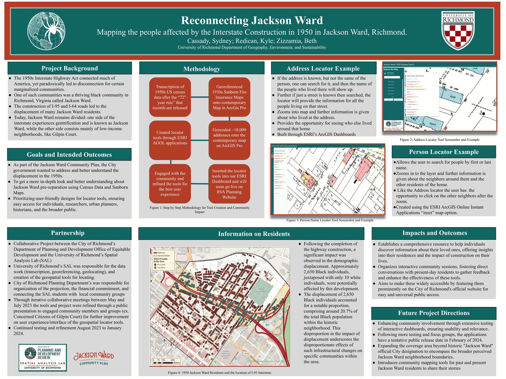

An interactive tool built on 1950 census records, made to help residents trace the families and neighbors who were pushed out of Jackson Ward when the highway came through.
When Interstate 95/64 was cut through Jackson Ward in the late 1950s, it severed the neighborhood and forced countless families out of homes that had anchored the community for generations. Much of that history lives only in memory, and the people who were relocated are increasingly hard to trace.
The 2023 project set out to make that history searchable. The team built a usable map application filled with 1950 census data so that locals can locate their own family members, or the people and neighbors they once knew, who were relocated or pushed out by the highway's construction. By tying census records to specific places on the map, the app turns a dataset into a tool for reconnection, helping the community recover a record of who lived where before the neighborhood was divided.
Pan, zoom, and use the sidebar to move through the 2023 work. The app opens full-screen in a new tab as well.
This work was presented at the 2023 Southeastern Division of the American Association of Geographers (SEDAAG) Annual Meeting.

Sydney Cassady · Elliot Delroba · Michelle Quach
Kyle Redican · Beth Zizzamia, University of Richmond, Department of Geography, Environment & Sustainability
Samantha Lewis and Maritza Pechin, City of Richmond, Department of Planning and Development, Office of Equitable Development, working with local community groups including the Concerned Citizens of Gilpin Court
Produced in the University of Richmond's Spatial Analysis Lab (SAL) and funded by the University of Richmond School of Arts and Sciences Summer Research Fellowship